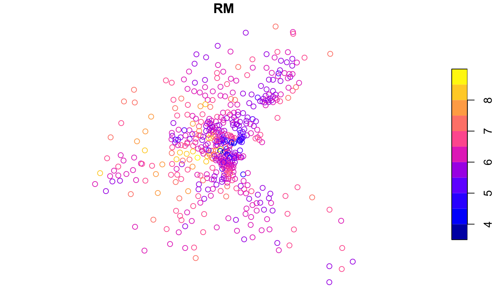

Housing and neighborhood data for the city of Boston based on research from the 1970s-90s.
bostonhsg
An sf data frame with 506 rows, 24 variables, and a geometry column:
Sequential ID
A factor with levels given by town names
A numeric vector corresponding to TOWN
A numeric vector of tract ID numbers
A numeric vector of tract point longitudes in decimal degrees
A numeric vector of tract point latitudes in decimal degrees
X Coordinates (UTM Zone 19)
Y Coordinates (UTM Zone 19)
A numeric vector of median values of owner-occupied housing in USD 1000
A numeric vector of corrected median values of owner-occupied housing in USD 1000
A numeric vector of per capita crime
A numeric vector of proportions of residential land zoned for lots over 25000 sq. ft per town (constant for all Boston tracts)
A numeric vector of proportions of non-retail business acres per town (constant for all Boston tracts)
A factor with levels 1 if tract borders Charles River; 0 otherwise
A numeric vector of nitric oxides concentration (parts per 10 million) per town
A numeric vector of average numbers of rooms per dwelling
A numeric vector of proportions of owner-occupied units built prior to 1940
A numeric vector of weighted distances to five Boston employment centers
A numeric vector of an index of accessibility to radial highways per town (constant for all Boston tracts)
A numeric vector full-value property-tax rate per USD 10,000 per town (constant for all Boston tracts)
A numeric vector of pupil-teacher ratios per town (constant for all Boston tracts)
A numeric vector of 1000*(Bk - 0.63)^2 where Bk is the proportion of blacks
A numeric vector of percentage values of lower status population
Harrison, David, and Daniel L. Rubinfeld. (1978). Hedonic Housing Prices and the Demand for Clean Air, Journal of Environmental Economics and Management, Volume 5, 81- 102. Original data. Gilley, O.W., and R. Kelley Pace. (1996). On the Harrison and Rubinfeld Data, Journal of Environmental Economics and Management, 31, 403-405. Provided corrections and examined censoring. Pace, R. Kelley, and O.W. Gilley. (1997). Using the Spatial Configuration of the Data to Improve Estimation, Journal of the Real Estate Finance and Economics, 14, 333-340.
Sf object, undefined Coordinate Reference System.
